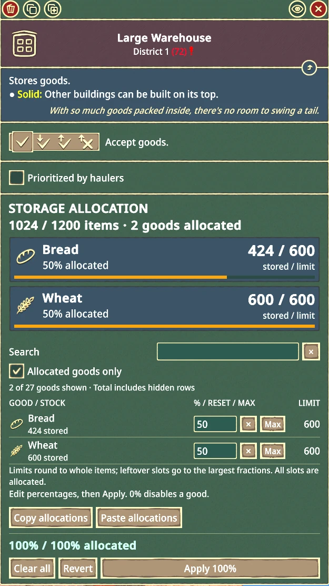

MixedStorage
One warehouse or pile, several kinds of goods: you give each one a share of the space, by percentage.
Percentages reserve space. They don't create goods or fill the building; your haulers bring stock by the game's usual rules.
Latest release Pre-release If the button opens GitHub, pick the MixedStorage zip under Assets, not Source code.
How the percentages work
Give any good the building normally accepts a share of its capacity. Three rules decide what that share means.
Shares total exactly 100%
Every slot has a purpose. Apply stays unavailable until the total is exactly 100%, down to 0.01%. Set everything to 0% and Apply to store nothing.
Limits round to whole items
Each share is rounded down, and the leftover slots go to the largest fractions, so the full capacity stays allocated. A tiny share in a small building can round to 0; the panel warns you.
Lowering a limit never deletes stock
Extra goods are marked as excess and leave the normal way. Deliveries already on their way count too: a change that would clash with them waits until they arrive.
Carrots 0
Carrots 2
Carrots 12
The same shares, 1% carrots and 99% gears, in three sizes. Whole items only: in the small warehouse the 1% rounds to 0, and the panel warns you before you Apply.
Right inside the building's window
Storage Allocation sits in the warehouse's own panel, drawn with the game's frames, buttons and fields. In the world, the building shows the mix with the game's own goods models.


- Stock at a glance
Summary cards show each good's icon, stored / limit count, share and a fill bar, including incoming deliveries and excess.
- Quick setup
Search, show only allocated goods, Max one good, or copy an allocation into another compatible building. The game's own Copy settings tool copies allocations too.
- Drafts until you Apply
Edits change nothing until you press Apply; the Apply button gets an orange ring while pressing it would change the building.
- Fits your screen
The editor is sized to your window and leaves room for the game's Construction site panel.
Play with the real panel
This is a working copy of the Storage Allocation panel, styled like the game. Edit percentages, then Apply, as you would in Timberborn. It uses the mod's own rounding and messages.
Things to try
- Every good a Folktails warehouse accepts is in the list. Use Search or scroll, set Bread to 25 and Wheat flour to 75, then press Apply 100%. Bread is now over its new limit. Lowering a limit never deletes stock, so the extra shows as excess.
- Type 60 into another good's box. The total turns red and Apply stays unavailable until it's exactly 100%.
- Load A tiny share to see the panel warn that a good rounds to 0 items.
- Press Copy allocations, switch to the other building, then Paste. The percentages carry over and the limits are recalculated for the new capacity.
Storage Allocation
A replica for illustration, not part of the game. It lists all 27 goods a Folktails warehouse accepts, and nothing here is saved. Goods icons are Timberborn's.
Warehouses and piles, both factions
| Faction | Warehouses | Piles |
|---|---|---|
| Folktails | Small, medium, large | Small, large, underground |
| Iron Teeth | Small, medium, large | Small industrial, large industrial |
Buildings keep their normal accepted goods: warehouses don't gain pile-only goods, or the other way round. Tanks and map-editor reserve storage aren't included.
- Game
Built for Timberborn 1.1.2.4.
- Requires
Harmony 2.4.1 or newer, enabled alongside MixedStorage.
- Co-op, optional
The BeaverBuddies Stability Fork. Support is built in and switches on by itself; every player needs the same MixedStorage and game version.
- One download
The same zip covers single player and co-op. There's no separate add-on.
Up and running in three steps
Download and extract
Get the MixedStorage zip from the release's Assets and put its
MixedStoragefolder straight intoDocuments\Timberborn\Mods. Windows' Extract All adds an outer folder: move theMixedStoragefolder inside it.Enable it
Get Harmony from the Steam Workshop if you haven't, turn on Harmony and MixedStorage in the game's mod manager, and restart when prompted.
Mix your storage
Select a supported warehouse or pile, enter percentages that total 100% in Storage Allocation, and click Apply 100%. Apply grayed out? Here's why.
What's been played
The panel's layout and the storage visuals have been checked in game, and players have reported using it. The newest behavior (the game's Copy settings tool, storing nothing, the Supply order and clearer messages) is covered by automated checks but hasn't been played in game yet, particularly in co-op.
Found something odd? Check the troubleshooting guide or open an issue.
Ready to mix things up?
One download covers single player and co-op.
Latest releasePre-release